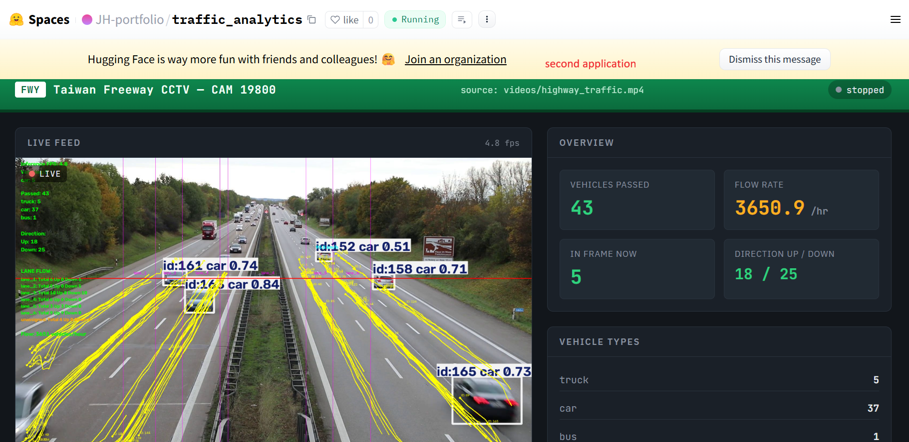
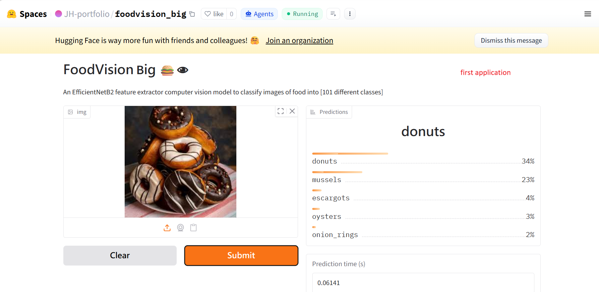

Two projects below, both live: a real-time freeway traffic analytics pipeline (YOLO + tracking + a FastAPI dashboard) and a 101-class food image classifier. Everything is deployed and clickable, not just described.

Real-time vehicle detection, multi-object tracking, per-lane counting, and speed estimation on Taiwan Freeway CCTV footage, served through a FastAPI backend and a live web dashboard.

An EfficientNet-B2 feature-extractor model that classifies food photos into 101 categories from the Food101 dataset, deployed as a Gradio app with sub-100ms CPU inference.